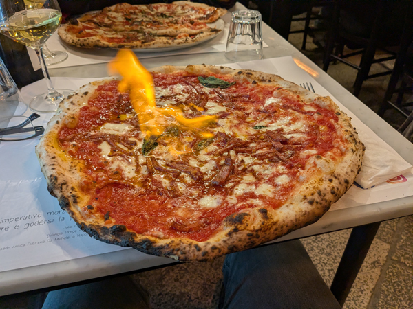
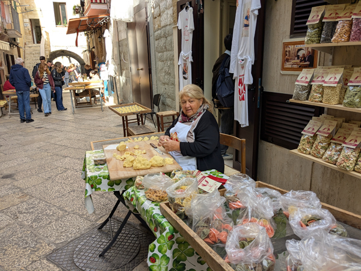
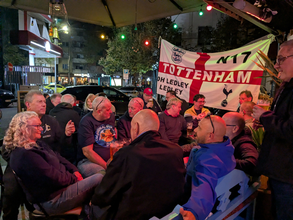
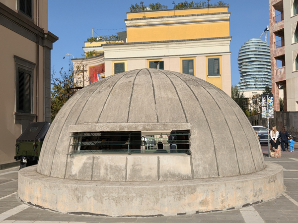
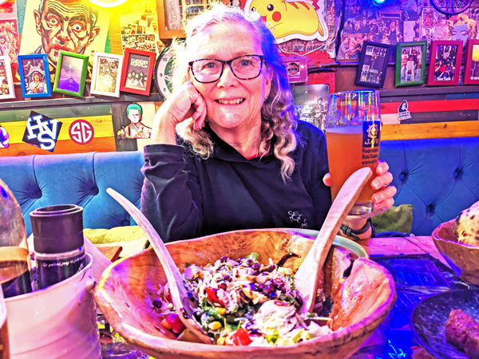
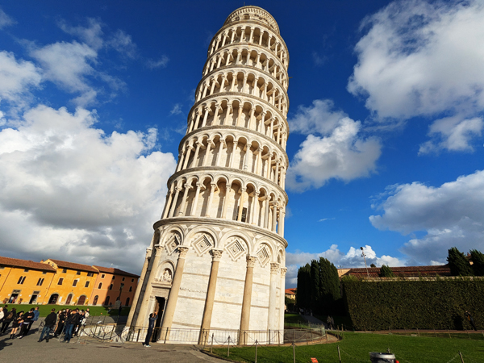

Thursday 13th November The trip started with a visit to Wembley for the England v Serbia game. We left Kingsclere at 3pm and drove to our usual Wembley parking spot. We had a drink in the Wetherspoons and then met Steve at a curry house. After the game, we walked back to the car and drove straight to Stansted. We had considered driving home but this would have meant only a couple of hours sleep so we had booked a night at the Days Inn near the airport instead. Getting away from Wembley was not too bad and the journey only took just over an hour. We were at the hotel which is at a service station on the M11 by 11:30. We checked in and went straight to sleep.
Friday 14th November We were awake by 5 and after quick showers, checked out of the hotel. It was only a 10 minute drive to the airport. We parked and then had a five minute walk to the terminal. Security was all fairly quick and by 6:00 were in the departure area. We bought breakfast and then went to wait for our 7:30 Ryanair flight to Bari. It had been a late decision to travel to Albania but we had been able to buy four flights each for a total of about £200 going via Italy in both directions so we thought we may as well.
The flight left just about on time. As usual with Ryanair, we were not sat together but the flight was not that full so we both had plenty of space. We landed in Bari at about 11:15. We both had to register with the new EU passport machines but the whole process did not take too long and we were through about 15 minutes later. We got straight onto a bus that took us into the centre of Bari

We had been told that we may not be able to check into our room until 16:00 so had a few hours to kill. We went and had a look at the main sights of Bari, i.e. Cathedral, Castle and Basilica San Nicola. The first two of these required payment to get in so we did not bother. At Basilica San Nicola there was free entry so we were able to go and see the tomb of Father Christmas which was a bit worrying. The church itself was all quite nice and it was a pleasant enough old town to wander round.
Once we had finished our sight-seeing, we walked out to the sea and round the port area. This was not quite as pleasant but it was getting towards lunchtime so we found a cafe and had our first pizzas of the trip. After eating, we were heading to a craft beer bar but got a message saying that our room was now ready. We headed back there instead and let ourselves in.
The apartment was very nice and in an excellent location. We had a few hours of not doing a lot and then went out and bought a bottle of wine and some nibbles for this evening. After showers, we had a couple of glasses of wine on the balcony.
At about 6:30, we went out for the evening. We had spotted a pizza restaurant that we had liked the look of near the apartment but wanted to try a couple of the craft beer bars first. We started at Mosaic, the place we had started walking towards earlier. This was a very nice bar with a very drinkable 8% IPA. We had a couple in there and then walked to BurBeero, another very good bar.

At 9 we headed to Pizzeria de Michele. This was an excellent place with superb pizzas. We had a couple of bottles of wine with the meal and made it back to the apartment by about 10:30.
Saturday 15th November We were supposed to check out by 10 and eventually left the apartment at about 10:20. We had another walk round the old town and stopped for a coffee/hot chocolate before walking to the bus stop for the airport bus.

We were at the airport by 12:15 and were through to the departure area about ten minutes later. Our Ryanair flight departed on time at 15:00 and we landed in Tirana about an hour later. Roz had been talking to someone on the plane and we shared a taxi with him and his other half into the centre. We were all dropped just off Skanderbeg Square at about 17:00.
We had a walk of about five minutes to where are apartment is. We phoned the owner and his father came down to show us how to get in. Another very nice apartment on the tenth floor with good views of the square. We had showers and then went out to meet Steve, Mick, Mark, etc at Ruka's caffè-bar, near to where we had been dropped off.

This is not the sort of bar we would usually spend too much time in but there was quite a big group of us there and it was a very enjoyable evening. We were back in the apartment just before midnight.
Sunday 16th November We went out for breakfast at about 9:45. We ate at a cafe near the square and then went off to see the sights. There is not too much to see in Tirana. We took a few photos in Skanderbeg Square and then walked out to the Tirana Pyramid. We passed the Bunker Art Museum but decided not to pay to go in.

Once we had climbed the pyramid, we walked back to the square and bumped into Steve, etc. We collected our Free Lions and walked back to the apartment.
We went out for the day at about 1:30. First stop was at the hotel where The F. A. were giving out tickets for this evenings game. We had put our names on the waiting list but were told that there was no chance of us getting tickets. We gave up at that point and accepted that we would be watching the game in a bar.
We were on our way back to the bar we had been in last night but stopped for a drink at Kafe Flora. This had come up on Google Maps as a craft beer option. They did not have the beer that their website claimed they had but they did have wheat beer so we had one of those each instead. We also decided that it would be a good place to watch the game.
After our drink, we headed back to Ruka's and spent the rest of the afternoon there. When everyone started heading off to the game, we went and ate at a nearby restaurant - Restorant Tymi. This was a slightly odd place that had very good food and more German beer

After eating we returned to Kafe Flora to watch the match. This place had quite a big outdoor seating area and was totally packed when we arrived. We got seats on someone else's table and had a reasonable view of the big screens. There was a good atmosphere in there and it was quite a good choice. After the game we rejoined everyone else when they got back to Ruka's and spent the rest of the night in there.
Monday 17th November We left the apartment at 9:00 and got a taxi to the airport. It was a drive of about 50 minutes - €20. We had breakfast before going through security and then went through to wait for our 12:05 Ryanair flight to Pisa. The flight left on time and landed in Pisa at about 1:40.
We had a wait of just over four hours in Pisa so decided we may as well go and have a look at the leaning tower. I had never seen it before and it was over 40 years since Roz had seen it. Once we were through immigration, we got straight in a taxi and got taken to the tower, about 2.5 miles away. We took all the obligatory photos, walked round the tower and then started making our way back to the airport. Only a quick visit but very enjoyable anyway.

We decided to walk back to the station to look for another taxi but by the time we had got there, we were only 20 minutes walk from the airport. We stopped for slices of pizza then completed the walk. We got back to the airport by 4ish and were at the gate by 4:30 to wait for the 17:50 flight back to Stansted.